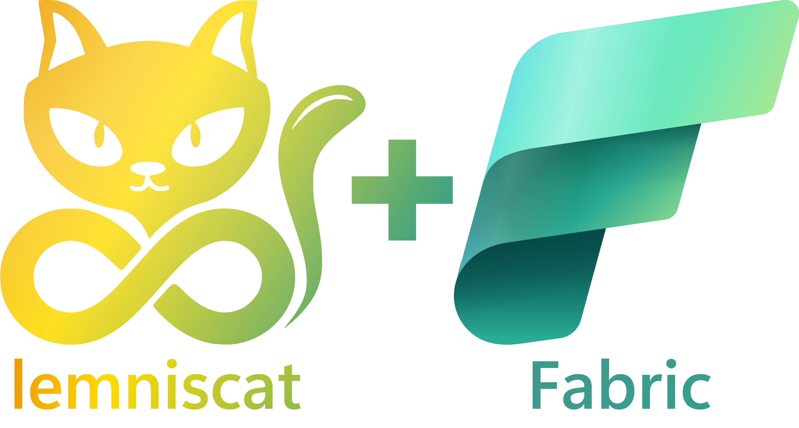

Enabling Adoption of Fabric with Lemniscat (Part 1)

In my company, I am responsible, among other things, for providing Azure spaces (resource groups) for my colleagues to explore various Azure services, test Azure configurations, etc. Recently, with the release of Microsoft Fabric, I noticed an increasing demand for providing Azure spaces with Microsoft Fabric.
The problem is that in my company, we have a dedicated tenant for all these experiments. My colleagues are therefore invited to this tenant to access Azure resources. And for the moment, Microsoft Fabric does not allow invited users to use the service.
So I had to systematically create a specific account for them in the tenant to allow them to test Microsoft Fabric. This took me time and I didn't find it very practical.
In parallel, I initiated a new open-source framework called Lemniscat. This framework allows creating and maintaining products oriented towards DevOps. In simple terms, this framework is a kind of "Terraform for Terraform" that allows building products that take into account the various aspects of a DevOps approach, oriented from a consumer point of view of the service.
Back to our case of Microsoft Fabric. This service is very interesting because it offers a unified experience for data-related professions, from ingestion to presentation through transformation, machine learning, etc. It is a service that allows data engineering, data science, BI, etc. In short, it is a service that can interest many people.
But as a user of this service, what do I need, finally?
- A Fabric capacity that I can instantiate on Azure.
- Access to this capacity to be able to use it.
- A working environment to be able to use this capacity (the Fabric Workspace).
- A Git repository to store my work artifacts (my notebooks, for example).
In short, to offer a worthy experience to my colleagues, I must make all this available to them. And that's where Lemniscat comes in.
In this article, I will show you how I was able to set up a Fabric capacity on Azure and give rights to this capacity to my colleagues using Lemniscat.
Note
In this article, I will not go into details about Lemniscat. If you want to learn more about Lemniscat, I invite you to check the documentation.
Using Terraform to Deploy Fabric Capacity
Because it's simple and it's a tool that everyone knows, I decided to use Terraform to deploy a Fabric capacity on Azure. However, I quickly encountered a problem: there is not yet a Terraform module to deploy a Fabric capacity on Azure. Fortunately, I found an example of Terraform that allows doing it. It's not ideal, as it is based on azapi, but it will do for now.
In this example, I see that it is only planned to allow a single administrator per Fabric capacity. However, now it is possible to define multiple administrators per capacity. It's okay, we'll make a small modification to allow several of my colleagues to use the same Fabric capacity.
main.tf
resource "azapi_resource" "fab_capacity" {
type = "Microsoft.Fabric/capacities@2022-07-01-preview"
name = var.basename
parent_id = var.resource_group_id
location = var.location
schema_validation_enabled = false
body = jsonencode({
properties = {
administration = {
members = var.admins_email
}
}
sku = {
name = var.sku,
tier = "Fabric"
}
})
tags = var.tags
}
variables.tf
variable "location" {
type = string
description = "Location of the resource group."
}
variable "tags" {
type = map(string)
default = {}
description = "A mapping of tags which should be assigned to the deployed resource."
}
variable "sku" {
type = string
default = "F2"
description = "SKU name"
}
variable "admins_email" {
type = list(string)
description = "Fabric administrators email"
}
Adding User Account Creation
Now that we have our Fabric capacity, we need to create user accounts that can use it.
Note
Currently, Microsoft Fabric does not allow the use of guest users. Thus, users must be in the Azure tenant to be able to access it.
So I have to create accounts on the fly for my colleagues. Once again, I will use Terraform for this.
Additionally, I need to generate a temporary password for each user. To do this, I will use a Terraform module that will allow me to generate a random password.
resource "random_password" "password" {
length = var.length
special = var.special
override_special = var.overrideSpecial
}
Once I have generated the password, I will create a user account for each user.
resource "azuread_user" "account" {
for_each = { for u in var.users : u.login => u }
user_principal_name = "${each.key}.${var.FABRICNAME}@${var.domainName}"
display_name = each.value.name
mail_nickname = each.key
force_password_change = true
password = module.adminPassword[each.key].password
lifecycle {
ignore_changes = [usage_location]
}
}
When creating a user account, it is necessary for the user to change their password at the first login. That's why I added force_password_change = true.
Warning
As soon as our user connects to Fabric, the usage_location attribute will be updated. That's why I added ignore_changes = [usage_location] in the lifecycle block. Indeed, this attribute cannot be set back to null (see: https://registry.terraform.io/providers/hashicorp/azuread/latest/docs/resources/user#usage_location?WT.mc_id=AZ-MVP-5004832).
So now we have our Fabric capacity and our users.
However, if we want to offer an optimal experience to our colleagues, we also need to create a working environment for them (the Fabric Workspace) and a Git repository to store their work.
Unfortunately, there is no Terraform module available, and azapi cannot help us. We need to find another solution.
This is a realization I have had many times. There are things that can be done with Terraform and others that cannot. That's where Lemniscat comes in.
Using Lemniscat to Orchestrate All This
Lemniscat is a framework that allows creating and maintaining products oriented towards DevOps. It allows designing products that take into account the various aspects of a DevOps approach, oriented from the consumer's point of view of the service.
Lemniscat works from a manifest that describes the product. This manifest describes how the product should be instantiated, but also how it should be destroyed. This last point is particularly handy in my case. Indeed, I want to allow my colleagues to discover Microsoft Fabric, but I don't want them to leave their capacity indefinitely active. We still have a limited budget, and it is important that as many of my colleagues as possible can benefit from Azure. With Lemniscat, I can define the product destruction procedure.
Initializing the Lemniscat Manifest
We will focus in this article on the creation of the Fabric capacity and the users. We will address in a future article the creation of the Fabric Workspace and the Git repository. In the Lemniscat framework, this corresponds to the operate capability.
Here is the Lemniscat manifest for the Fabric capacity and the users:
capabilities:
code: null
build: null
test: null
release: null
deploy: null
operate:
solutions:
- solution: Azure
tasks:
<here we will create the operations to create the user accounts and the Fabric capacity>
requirements:
- name: lemniscat.plugin.terraform
version: 0.2.5
- name: lemniscat.plugin.filetransform
version: 0.2.1
Configuration of the Tfvars File
I use Backstage to offer an optimal experience. So I created a form that allows requesting a Fabric capacity. I ask my colleagues for some information:
- The name of the Fabric capacity:
appName - The power of the Fabric capacity:
skuName - The list of users to create who will be Administrators of the Fabric capacity:
users - The lifespan of the Fabric capacity:
delayBeforeCleanUp - These parameters will be filled in a tfvars file that I will then use with Terraform.
To do this, I will use the
filetransformtask of Lemniscat to complete the tfvars file.
- task: filetransform
displayName: 'Set tfvars'
steps:
- pre
- pre-clean
parameters:
folderPath: ${{ product.tfVarsPath }}
fileType: json
targetFiles: "*.tfvars.json"
Once this task is executed, I have my tfvars file ready to be used by Terraform. For example:
{
"appName": "myFabric",
"skuName": "F2",
"users": [
{
"name": "John Doe",
"login": "john.doe",
},
{
"name": "Jane Doe",
"login": "jane.doe",
}
],
"delayBeforeCleanUp": "1h"
}
Creation of the Fabric Capacity and Users
To create the Fabric capacity and users, I will use the Terraform plugin of Lemniscat.
To initialize Terraform, I will use the init action.
- task: terraform
displayName: 'Terraform init'
steps:
- pre
- run
- pre-clean
- run-clean
parameters:
action: init
tfPath: ${{ product.tfPath }}
backend:
backend_type: azurerm
storage_account_name: ${{ nc.workspace.stName }}
container_name: tfstates
key: ${{ productInstanceName }}.${{ rgTags.product_name }}.tfstate
Then, I will use the plan action to check that everything is correct, and in particular to verify that the input parameters are correct.
- task: terraform
displayName: 'Terraform plan'
steps:
- pre
parameters:
action: plan
tfPath: ${{ product.tfPath }}
tfVarFile: ${{ product.tfVarsPath }}/${{ product.tfVarsFile }}
tfplanFile: ${{ product.tfPath }}/terrafom.tfplan
Finally, I will use the apply action to deploy the Fabric capacity and users.
- task: terraform
displayName: 'Terraform apply'
steps:
- run
parameters:
action: apply
tfPath: ${{ product.tfPath }}
tfplanFile: ${{ product.tfPath }}/terrafom.tfplan
Destruction of the Fabric Capacity and Users
Once the Fabric capacity and users have been created, it is necessary to think about destroying them (I remind you that my colleagues need this Fabric capacity temporarily).
For this, I will use the destroy action of the Terraform plugin.
- task: terraform
displayName: 'Terraform destroy'
steps:
- run-clean
parameters:
action: destroy
tfPath: ${{ product.tfPath }}
tfVarFile: ${{ product.tfVarsPath }}/${{ product.tfVarsFile }}
Conclusion
Of course, you will tell me that I am making my life complicated. I could have simply used Terraform for everything. And you're right.
But as I mentioned at the beginning of this article, I also need to create a working environment (the Fabric Workspace) and a Git repository.
In the next article, I will show you how I was able to create a working environment and a Git repository with Lemniscat to allow my colleagues to store their work.
To be continued...
References
- Sample Terraform for Microsoft Fabric
- Documentation terraform : azuread_user, limitation usage_location
- Lemniscat Framework Documentation
Written by Philippe MORISSEAU, Published on March 30, 2024.